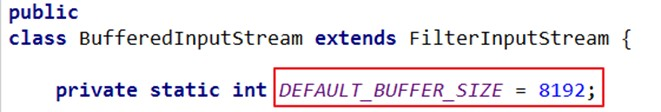

缓冲流的使用
1.缓冲流涉及到的类：
* BufferedInputStream
* BufferedOutputStream
* BufferedReader
* BufferedWriter
2.作用：
作用：提供流的读取、写入的速度
提高读写速度的原因：内部提供了一个缓冲区。默认情况下是8kb

3.典型代码
3.1 使用BufferedInputStream和BufferedOutputStream:处理非文本文件
//实现文件复制的方法
public void copyFileWithBuffered(String srcPath,String destPath){
BufferedInputStream bis = null;
BufferedOutputStream bos = null;
try {
//1.造文件
File srcFile = new File(srcPath);
File destFile = new File(destPath);
//2.造流
//2.1 造节点流
FileInputStream fis = new FileInputStream((srcFile));
FileOutputStream fos = new FileOutputStream(destFile);
//2.2 造缓冲流
bis = new BufferedInputStream(fis);
bos = new BufferedOutputStream(fos);
//3.复制的细节：读取、写入
byte[] buffer = new byte[1024];
int len;
while((len = bis.read(buffer)) != -1){
bos.write(buffer,0,len);
}
} catch (IOException e) {
e.printStackTrace();
} finally {
//4.资源关闭
//要求：先关闭外层的流，再关闭内层的流
if(bos != null){
try {
bos.close();
} catch (IOException e) {
e.printStackTrace();
}
}
if(bis != null){
try {
bis.close();
} catch (IOException e) {
e.printStackTrace();
}
}
//说明：关闭外层流的同时，内层流也会自动的进行关闭。关于内层流的关闭，我们可以省略.
// fos.close();
// fis.close();
}
}
3.2 使用BufferedReader和BufferedWriter：处理文本文件
@Test
public void testBufferedReaderBufferedWriter(){
BufferedReader br = null;
BufferedWriter bw = null;
try {
//创建文件和相应的流
br = new BufferedReader(new FileReader(new File("dbcp.txt")));
bw = new BufferedWriter(new FileWriter(new File("dbcp1.txt")));
//读写操作
//方式一：使用char[]数组
// char[] cbuf = new char[1024];
// int len;
// while((len = br.read(cbuf)) != -1){
// bw.write(cbuf,0,len);
// // bw.flush();
// }
//方式二：使用String
String data;
while((data = br.readLine()) != null){
//方法一：
// bw.write(data + "\n");//data中不包含换行符
//方法二：
bw.write(data);//data中不包含换行符
bw.newLine();//提供换行的操作
}
} catch (IOException e) {
e.printStackTrace();
} finally {
//关闭资源
if(bw != null){
try {
bw.close();
} catch (IOException e) {
e.printStackTrace();
}
}
if(br != null){
try {
br.close();
} catch (IOException e) {
e.printStackTrace();
}
}
}
}